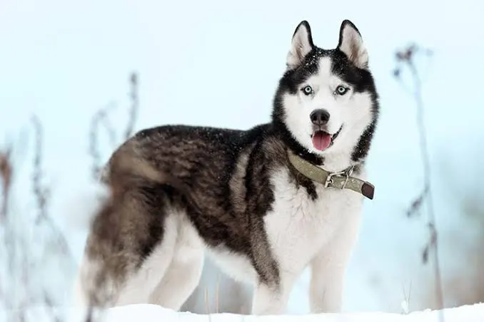

Hello this is the pet shelter.
We have all kinds of pets go to our breeds section to find out which breeds we have.
you can also see them at our shop
and ofcourse you can give your pets for adoption.
There food
You can also buy food at our pet shelter, so its not only a pet shelter but also a pet food shop.
There food depends on which pet and/or breed you adopt.
to make it easier to know which pet eats what we have added a seperate page with all info for all kinds of pets and breeds.
We also have different sections in our shop and a list of which pets eat what to make sure that if you were not able to or forgot to check on our website, you dont get lost on what to buy.
Breeds
We have lots of kinds breeds.
Here below you can see one of the animals that are available for
adoption.
Contact information

For the adoption form please click below form